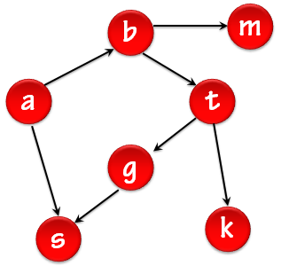

Recorridos sobre grafos
Autoevaluación
Se presentan ejercicios de autoevaluación que le permitirán determinar cuánto ha aprendido sobre Grafos.
Rellenar huecos
Observe el grafo que aparece abajo y complete los recorridos según corresponda

Pregunta Verdadero-Falso
Responda si las siguientes afirmaciones son verdaderas o falsas.
Retroalimentación
Verdadero
Un Recorrido en profundidad es una generalización del recorrido preorden de un árbol.
Retroalimentación
Falso
Un Recorrido en profundidad es una generalización del recorrido por niveles de un árbol.
Pregunta de Selección Múltiple
Solución
Obra publicada con Licencia Creative Commons Reconocimiento Compartir igual 4.0